根單位
子單位
人員編組
建立單位
先建立單位名稱、階層與人員編組，讓後續座位圖、點名任務與報告都使用同一份資料。
OFFLINE / LOCAL FIRST
RollSight 協助你建立單位、安排座位圖、執行日常點名、匯出報告，並透過 QR Code 在裝置間同步資料。資料預設留在本機，不需要雲端帳號。
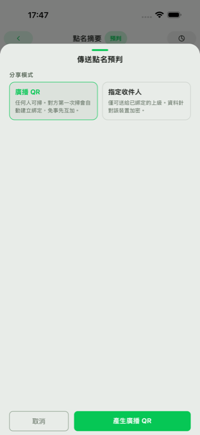
CORE WORKFLOWS
內容依使用手冊的學習路徑整理：先建立資料骨架，再進入座位圖、點名任務、QR 協作與訂閱／隱私設定。
先建立單位名稱、階層與人員編組，讓後續座位圖、點名任務與報告都使用同一份資料。
依情境建立座位、分區與人員配置，日常點名時可直接在位置上標記狀態。
建立任務後標記到位、缺席或事故狀態，最後用摘要與 PNG 報告完成回報。
收到其他裝置的 QR 後先進收件匣，再選擇建立新任務、併入既有任務或檢查重送差異。
方案限制以操作前提示為主，資料預設保存在本機；公開網站只承諾目前 App 可驗證的隱私與安全設計。
SECURITY / SUBSCRIPTION
RollSight 會說清楚實際保護方式，但不把安全設計包裝成絕對保證，也不做超出 App 目前能力的行銷承諾。
QR 資料直接在裝置間傳遞，不經雲端伺服器；App 以簽章驗證、防重放與裝置綁定降低誤收或遭竄改風險。
資料備份會以使用者 PIN 衍生的金鑰加密。請妥善保存 PIN，開發者無法替使用者解開或線上復原備份內容。
FREE 可建立每月 30 次點名任務、5 張座位圖與每日 5 張含浮水印匯出；BASIC 提升到 20 張座位圖、單圖 200 座位與每日 10 張無浮水印匯出，FULL 解鎖更進階的自訂與彙整能力。
PRODUCT FLOWS
每一組流程都用 Light 情境與同規格手機截圖串起來，讓尚未安裝 App 的使用者也能先理解從建立資料、執行點名到產出回報的操作脈絡。
先完成首次設定，再建立單位階層與人員編組。後續座位圖、點名任務與報告都會共用這份資料。
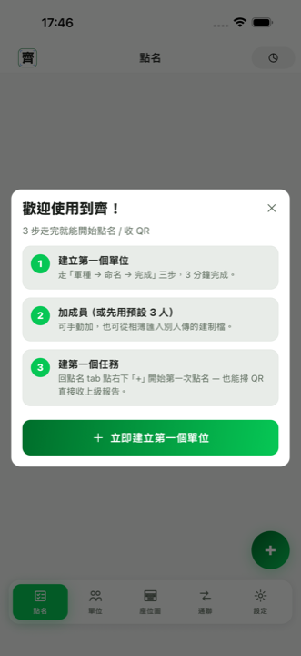
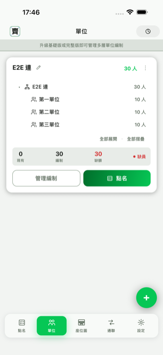
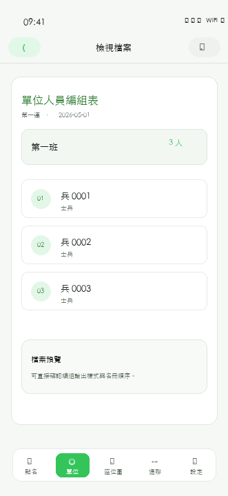
從任務列表建立今天的點名，進入摘要後先確認狀態分布，再依情境切換列表或座位圖操作。
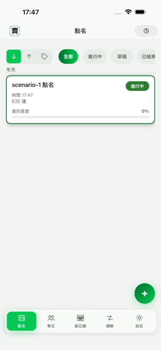
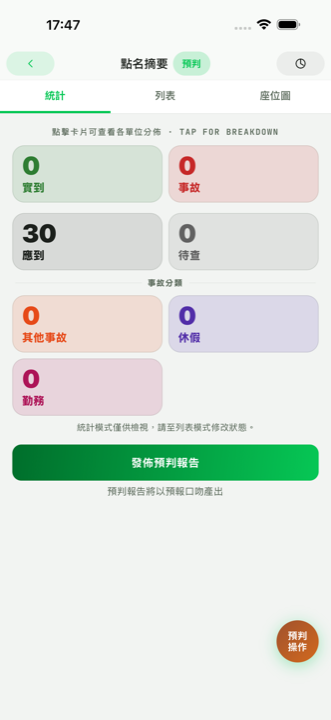
逐人確認時使用列表模式；需要依位置快速標記時切到座位圖模式。兩種操作都回到同一份點名狀態。
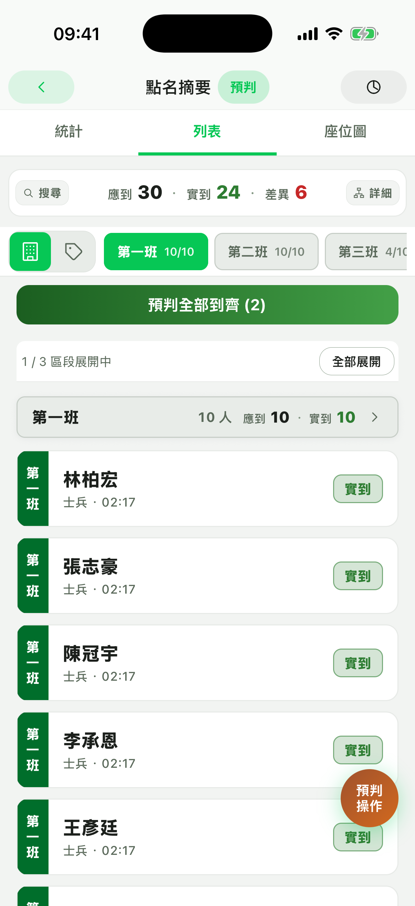
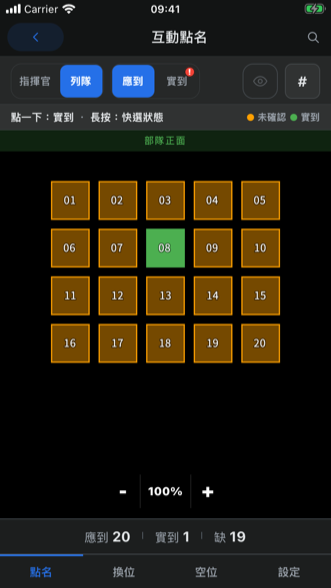
回報畫面整理統計、單位明細與口頭報告詞；匯出圖片則適合傳給外部窗口或留存紀錄。
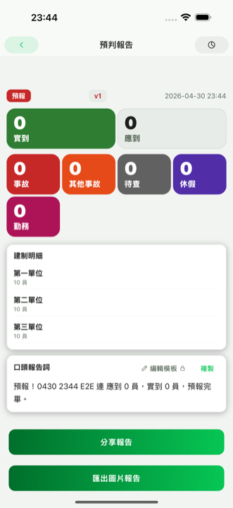
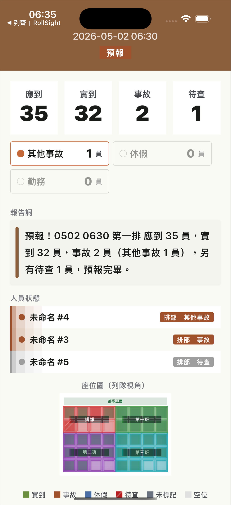
RollSight 以本機優先與 QR 點對點作為核心。需要進階容量或匯出額度時，App 會在操作前顯示方案提示。
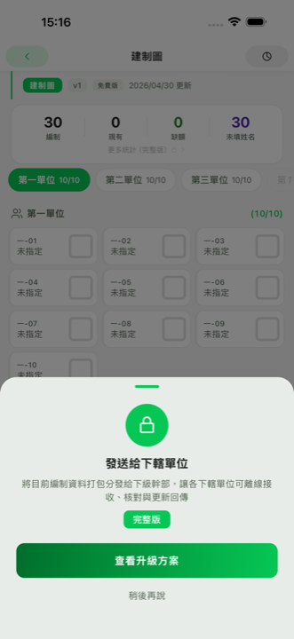
THEME TOKENS
網站以亮色 / 暗色作為長文閱讀基礎；低亮度、深綠與夜間護眼僅作為 RollSight App 佈景樣本，保留狀態 pill、緊湊卡片、微標籤與截圖框語彙。
QUICK START
第一次使用時依這五步走即可：先建立資料，再完成座位、任務、分享與方案確認。
輸入單位名稱，補上階層與人員編組，讓後續座位圖、任務與報告共用同一份資料。
配置座位數、分區與人員位置，讓日常點名可以直接在位置上標記狀態。
選擇單位後開始點名，在座位圖或名冊中標記到位、缺席與事故狀態。
要交接或彙整資料時，使用 QR 圖片傳送；收到資料後先進收件匣再決定處理方式。
完成點名後查看摘要、匯出圖片報告；若動作需要進階方案，App 會在操作前提示。
USER GUIDE
目前先公開手冊索引與摘要，後續可再把 repo 內的 markdown 手冊逐頁轉成 HTML。需要協助時，也可以先從支援頁面聯絡開發者。
說明首次設定、建立第一個單位、階層樹狀單位資料、人員編組與主單位標記。
整理座位圖 tab、任務內建立、範本套用、多單位共用與快速設定精靈。
從建立任務、互動座位圖標記，到點名摘要與報告匯出流程。
說明 QR 匯入、收件匣彙整、併入任務、未驗證來源與重送內容對照。
整理 FREE / BASIC / FULL 分層、試用、自動續訂、取消訂閱與方案提示原則。
此區目前是公開索引，尚未宣稱所有 markdown 手冊都已完成網頁化。下一階段會把各主題拆成獨立頁面，並保留 Privacy 與 Support 的固定入口。
RollSight 是離線優先工具。你建立的單位、人員、點名與座位圖資料儲存在裝置本機；跨裝置資料傳輸透過 QR Code 點對點進行，並以簽章驗證、防重放與裝置綁定降低誤收或遭竄改風險。備份檔則以使用者 PIN 衍生的金鑰加密。App 只使用匿名崩潰與效能資料來修復問題。
查看完整 Privacy Policy